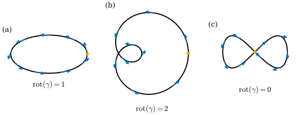
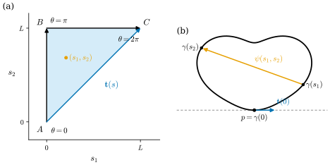
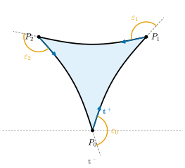
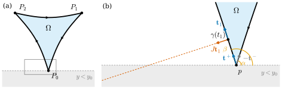

5.6 The Rotation Index and the Rotation Index Theorem
Goals
- closed plane curve의 rotation index를 정의하고, 그것이 정수이며 출발점·reparametrization·rigid motion에 무관함을 보일 수 있다.
- 단위원으로 가는 continuous map을 star-shaped compact 집합 위에서 연속인 각으로 “들어 올릴” 수 있음을 uniform continuity로 증명할 수 있다.
- Hopf의 rotation index theorem “simple closed curve의 rotation index는 \(\pm 1\)”을 secant line map으로 증명할 수 있다.
- vertex가 있는 curvilinear polygon에서 \(\sum\int\kappa_s + \sum\varepsilon_i = \pm 2\pi\)를 증명하고, 영역을 왼쪽에 두고 돌면 부호가 \(+\)임을 보이며, 다각형의 내각의 합에 적용할 수 있다.
Prerequisites
- signed curvature와 tangent angle(Definition 4.4.2, Proposition 4.4.5, Proposition 4.4.7, Lemma 4.4.8, Theorem 4.4.9), closed curve의 \(\int\kappa_s\abs{\gamma'} \in 2\pi\Z\)(Exercise 4.4.8)
- arc length parametrization(Theorem 4.3.9), 적분의 triangle inequality(Lemma 4.2.9), 평면의 회전 \(R_\alpha\)(Example 1.2.2(e))
- compactness: Heine–Borel theorem(Theorem 3.6.7), extreme value theorem(Theorem 3.6.10), Lebesgue number lemma(Lemma 3.6.17)와 uniform continuity(Corollary 3.6.19)
- connectedness: 연결의 정의(Definition 3.7.1), \(\R\)의 연결 부분집합(Theorem 3.7.4), continuous image(Proposition 3.7.5), intermediate value theorem(Corollary 3.7.6), path-connected이면 연결(Proposition 3.7.9)
- closure와 boundary \(\overline{A} = A \cup \partial A\)(Proposition 3.1.27), subspace topology(Definition 3.3.1)
- Green's theorem과 positively oriented boundary, 받아들인 Jordan curve theorem(Theorem 2.6.13). Proposition 5.6.12에서만 쓴다
Motivation
Section 5.5까지는 한 점 근처의 모양, 곧 국소적인 성질을 보았다. 이 절에서는 곡선 전체를 한 번에 보는 전역적인 질문을 하나 다룬다. 평면에서 closed curve를 한 바퀴 돌면 접선은 처음 방향으로 돌아오므로, 그동안 접선이 돈 총 각도 \(\int\kappa_s\abs{\gamma'}\,dt\)는 \(2\pi\)의 정수배다(Exercise 4.4.8). 이 정수가 rotation index다. limaçon처럼 안쪽 고리가 있는 곡선은 \(2\)이고, figure-eight curve는 \(0\)이다. 그렇다면 스스로 만나지 않는 closed curve는 어떤가?
답은 “언제나 \(\pm 1\)”이다. 1935년 Hopf(H. Hopf)가 증명한 이 정리는 믿기 쉬워 보이지만 증명에는 곡선 전체를 한꺼번에 다루는 topological 논증이 필요하다. 이 절은 Chapter 3의 compactness와 connectedness만으로 그 증명을 완성하고, vertex가 있는 curvilinear polygon으로 넓힌다. 이 정리는 Chapter 10의 Gauss–Bonnet theorem의 증명에서 다시 쓴다.

Closed Curves and the Rotation Index
Definition 5.6.1 (closed curve and simple closed curve). \(\gamma\colon \R \to \R^2\)가 regular curve이고 \(T \gt 0\)이 있어 모든 \(t\)에서 \(\gamma(t + T) = \gamma(t)\)이면, \(\gamma\)를 주기 \(T\)인 closed curve(닫힌 곡선)이라 한다. 여기에 더해 \(\gamma\)가 \([0, T)\)에서 injective이면 simple closed curve(단순 닫힌 곡선)이라 한다.
주기가 \(T\)이면 \(2T, 3T, \dots\)도 주기이므로 closed curve라 할 때는 주기 \(T\)를 함께 정해 둔다. simple closed curve이면 \(T\)는 가장 작은 양의 주기다. \(0 \lt T' \lt T\)가 주기라면 \(\gamma(0) = \gamma(T')\)이 injectivity에 어긋나기 때문이다. 단순하다는 것은 \(\gamma(t_1) = \gamma(t_2)\)이 \(t_1 - t_2 \in T\Z\)일 때만 일어난다는 것과 같다. 곧 trace가 스스로 교차하지 않고 한 번만 돈다.
Example 5.6.2. (a) 원 \((r\cos t, r\sin t)\)은 주기 \(2\pi\)인 simple closed curve이다. 같은 곡선을 주기 \(4\pi\)로 보면 \(\gamma(0) = \gamma(2\pi)\)이고 \(2\pi \in [0, 4\pi)\)이므로 단순하지 않다(원을 두 번 도는 곡선).
(b) 타원 \((A\cos t, B\sin t)\)(\(A, B \gt 0\))은 주기 \(2\pi\)인 simple closed curve이다.
(c) limaçon \(\gamma(t) = (1 + 2\cos t)(\cos t, \sin t)\)은 regular인 closed curve이지만(Exercise 4.4.8(c)) \(\gamma(2\pi/3) = \gamma(4\pi/3) = 0\)이므로 단순하지 않다.
(d) figure-eight curve \(\gamma(t) = (\sin t, \sin t\cos t)\)은 \(\gamma'(t) = (\cos t, \cos 2t)\)이고 \(\cos t = 0\)이면 \(\cos 2t = -1\)이므로 regular이다. \(\gamma(0) = \gamma(\pi) = 0\)이므로 단순하지 않다.
이제 rotation index를 정의한다. arc length로 parametrization할 필요가 없도록 일반 매개변수로 쓴다(Theorem 4.4.9 뒤의 설명).
Definition 5.6.3 (rotation index). \(\gamma\)가 주기 \(T\)인 closed curve이고 \(\kappa_s\)가 그 signed curvature이면
를 \(\gamma\)의 rotation index(회전지수)라 한다.
Proposition 5.6.4 (properties of the rotation index). \(\gamma\)가 주기 \(T\)인 closed curve라 하자.
- (a) \(\theta\colon \R \to \R\)가 연속이고 모든 \(t\)에서 \(\gamma'(t)/\abs{\gamma'(t)} = (\cos\theta(t), \sin\theta(t))\)이면(연속인 tangent angle), 모든 \(c\)에서 \(\theta(c + T) - \theta(c) = 2\pi\operatorname{rot}(\gamma)\)이다. 특히 \(\operatorname{rot}(\gamma)\)는 정수이고, 출발점을 옮긴 곡선 \(\gamma(\cdot + c)\)의 rotation index와 같다.
- (b) \(h\colon \R \to \R\)가 매끄럽고 \(h' \gt 0\), \(h(u + \tilde T) = h(u) + T\)이면 \(\gamma \circ h\)는 주기 \(\tilde T\)인 closed curve이고 \(\operatorname{rot}(\gamma \circ h) = \operatorname{rot}(\gamma)\)이다. \(h' \lt 0\), \(h(u + \tilde T) = h(u) - T\)이면 \(\operatorname{rot}(\gamma \circ h) = -\operatorname{rot}(\gamma)\)이다. 두 경우 모두 \(\gamma\)가 단순하면 \(\gamma \circ h\)도 단순하다.
- (c) \(L = \int_0^T \abs{\gamma'}\)이라 하면 \(\gamma\)의 arc length parametrization(\(t_0 = 0\))는 주기 \(L\)인 closed curve이고, rotation index가 같으며, \(\gamma\)가 단순하면 단순하다.
- (d) \(\gamma\)에 rigid motion of the plane을 합성해도 rotation index는 같고, 반사 \((x, y) \mapsto (x, -y)\)를 합성하면 rotation index의 부호가 바뀐다.
Proof. (a) \(\mathbf{t}(t) = \gamma'(t)/\abs{\gamma'(t)}\)는 매끄럽고 크기가 \(1\)이므로 Lemma 4.4.8에 의해 smooth tangent angle \(\theta_1\)이 있고 \(\theta_1' = \inner{d\mathbf{t}/dt}{J\mathbf{t}}\)이다. Proposition 4.4.5에서 \(d\mathbf{t}/dt = \abs{\gamma'}\kappa_s\,J\mathbf{t}\)이므로 \(\theta_1' = \kappa_s\abs{\gamma'}\)이다. 이 함수는 주기 \(T\)를 가지므로 \(\theta_1(c + T) - \theta_1(c) = \int_c^{c+T}\kappa_s\abs{\gamma'} = \int_0^T\kappa_s\abs{\gamma'} = 2\pi\operatorname{rot}(\gamma)\)이다(주기함수의 적분은 한 주기 구간을 어디서 잡아도 같다). Lemma 4.4.8의 유일성에서 \(\theta = \theta_1 + 2\pi m\)(\(m\)은 정수)이므로 \(\theta\)도 같은 차를 준다. \(\mathbf{t}(c + T) = \mathbf{t}(c)\)이므로 이 차는 \(2\pi\)의 정수배이고, 따라서 \(\operatorname{rot}(\gamma) \in \Z\)이다.
(b) \(\gamma \circ h(u + \tilde T) = \gamma(h(u) + T) = \gamma(h(u))\)이다. \(h' \gt 0\)이면 \(\gamma \circ h\)의 unit tangent vector는 \(\mathbf{t}(h(u))\)이므로(Proposition 4.3.5(d)) \(\theta \circ h\)가 연속인 tangent angle이고, (a)에서 \(2\pi\operatorname{rot}(\gamma \circ h) = \theta(h(u) + T) - \theta(h(u)) = 2\pi\operatorname{rot}(\gamma)\)이다. \(h' \lt 0\)이면 unit tangent vector가 \(-\mathbf{t}(h(u))\)이므로 \(\theta \circ h + \pi\)가 연속인 tangent angle이고 그 차는 \(\theta(h(u) - T) - \theta(h(u)) = -2\pi\operatorname{rot}(\gamma)\)이다. 단순성: \(h\)는 strictly monotone이고 \(h(u + \tilde T) = h(u) \pm T\)이므로 \(u_1 - u_2 \in \tilde T\Z \iff h(u_1) - h(u_2) \in T\Z\)이다.
(c) \(\abs{\gamma'}\)이 주기 \(T\)를 가지므로 \(s(t + T) = s(t) + L\)이고, 그 역함수 \(h\)는 \(h(\sigma + L) = h(\sigma) + T\), \(h' \gt 0\)을 만족한다(Theorem 4.3.9). (b)를 쓴다.
(d) Proposition 4.4.7(b), (c)에서 signed curvature는 각각 같고 부호가 바뀌며, 두 map 모두 속력을 보존한다.
Example 5.6.5 (computing the rotation index). (a) 반시계 방향 원은 \(\kappa_s = 1/r\), \(\abs{\gamma'} = r\)이므로 \(\operatorname{rot} = (1/2\pi)(2\pi) = 1\)이고, 시계 방향 원은 \(-1\)이다(Example 4.4.3). 원을 주기 \(4\pi\)로 보면 \(2\)이다.
(b) 타원 \((A\cos t, B\sin t)\)은 \(\kappa_s = AB/(A^2\sin^2 t + B^2\cos^2 t)^{3/2}\)(Exercise 4.4.1)이고 \(\abs{\gamma'} = (A^2\sin^2 t + B^2\cos^2 t)^{1/2}\)이므로 \(\kappa_s\abs{\gamma'} = AB/(A^2\sin^2 t + B^2\cos^2 t)\)이다. \((-\pi/2, \pi/2)\)에서 \(u = \tan t\)로 치환하면 \(dt/(A^2\sin^2 t + B^2\cos^2 t) = du/(A^2u^2 + B^2)\)이므로 이 구간의 적분은 \(\int_{-\infty}^{\infty} du/(A^2u^2 + B^2) = \pi/(AB)\)이다. integrand는 주기 \(\pi\)를 가지므로 한 주기 \([-\pi/2, 3\pi/2]\)의 적분은 \(2\pi/(AB)\)이고, \(\operatorname{rot} = (1/2\pi)\cdot AB\cdot 2\pi/(AB) = 1\)이다.
(c) limaçon은 Exercise 4.4.8(c)에서 \(\operatorname{rot} = 4\pi/2\pi = 2\)이다.
(d) figure-eight curve에서 \(\gamma(t + \pi) = (-\sin t, \sin t\cos t)\)는 \(\gamma(t)\)를 \(y\)축에 대해 반사한 점이다. \(y\)축에 대한 반사 \((x, y) \mapsto (-x, y)\)는 \(x\)축에 대한 반사에 회전 \(R_\pi\)를 합성한 것이다. Proposition 4.4.7에서 \(\gamma\)를 이 반사로 옮긴 곡선의 signed curvature는 \(-\kappa_s\)이고 속력은 같으므로 \(\kappa_s(t + \pi)\abs{\gamma'(t + \pi)} = -\kappa_s(t)\abs{\gamma'(t)}\)이다. 따라서 \(\int_0^{2\pi} = \int_0^\pi + \int_\pi^{2\pi}\)의 두 조각이 상쇄되어 \(\operatorname{rot} = 0\)이다.
Verification: verify/v-5-6-rotation-index.py
Angles of Maps into the Unit Circle
평면의 단위벡터는 \((\cos\theta, \sin\theta)\)로 쓸 수 있지만 \(\theta\)는 \(2\pi\)의 정수배만큼 모호하다. Lemma 4.4.8은 한 변수의 smooth 경우에 이 모호함을 연속적으로 정리했다. rotation index theorem의 증명에서는 두 변수의 연속map에 대해 같은 일을 해야 한다. 단위원을 \(S^1 = \{u \in \R^2 : \abs{u} = 1\}\)로 쓴다.
Lemma 5.6.6 (existence of a continuous angle function).
- (a) \(u, v \in S^1\)이고 \(v \neq -u\)일 때
\[ \angle(u, v) = 2\arctan\frac{\det(u, v)}{1 + \inner{u}{v}} \tag{5.6.2} \]로 두면 \(\angle(u, v) \in (-\pi, \pi)\)이고 \(v = R_{\angle(u, v)}\,u\)이다. 거꾸로 \(v = R_\varphi u\)이고 \(\varphi \in (-\pi, \pi)\)이면 \(\angle(u, v) = \varphi\)이다. \(\angle\)는 \(\{(u, v) \in S^1 \times S^1 : v \neq -u\}\)에서 연속이다.
- (b) \(K \subseteq \R^2\)가 compact이고 점 \(k_0 \in K\)가 있어 모든 \(x \in K\)에 대해 선분 \(\{k_0 + \lambda(x - k_0) : 0 \le \lambda \le 1\}\)이 \(K\)에 들어 있다고 하자 (이런 \(K\)를 \(k_0\)에 대해 star-shaped(별 모양)이라 한다). \(\psi\colon K \to S^1\)이 연속이고 \(\psi(k_0) = (\cos\theta_0, \sin\theta_0)\)이면, 연속함수 \(\theta\colon K \to \R\)가 꼭 하나 있어 \(\theta(k_0) = \theta_0\)이고 모든 \(x \in K\)에서 \(\psi(x) = (\cos\theta(x), \sin\theta(x))\)이다. 이런 \(\theta\)를 \(\psi\)의 angle function라 부른다.
- (c) (b)의 상황에서 \(D \subseteq K\)가 연결이고 단위벡터 \(m\)이 있어 \(-m \notin \psi(D)\)이면, 모든 \(x_1, x_2 \in D\)에서 \(\theta(x_2) - \theta(x_1) = \angle(m, \psi(x_2)) - \angle(m, \psi(x_1))\)이다.
이 보조정리가 말하는 것. (a)는 서로 반대가 아닌 두 방향 사이의 “작은 쪽으로 잰 부호 있는 각”을 식으로 준다. (b)는 compact star-shaped 집합에서 연속인 방향 함수를 연속인 각으로 나타낼 수 있다는 것이고, (c)는 방향이 어떤 반원(\(-m\)을 뺀 원) 안에만 머무는 동안에는 각의 변화를 그 반원 안에서 바로 읽을 수 있다는 것이다.
Proof idea: (b)는 \(k_0\)에서 \(x\)까지의 선분을 짧게 \(N\)등분하고, 이웃한 두 점의 방향 사이의 작은 각 (a)를 모두 더한다. uniform continuity 덕분에 \(N\)을 \(x\)에 무관하게 잡을 수 있어 그 합이 \(x\)의 연속함수가 된다. 유일성과 (c)는 연결 집합 위의 정수값 연속함수가 상수라는 데서 나온다.
Proof. (a) \(u = (\cos a, \sin a)\)로 쓰고, \(v = (\cos b, \sin b)\)에서 \(b\)를 \(\varphi = b - a \in (-\pi, \pi]\)가 되게 고른다. \(v \neq -u\)이므로 \(\varphi \neq \pi\), 곧 \(\varphi \in (-\pi, \pi)\)이다. 덧셈정리에서 \(\det(u, v) = \cos a\sin b - \sin a\cos b = \sin\varphi\), \(\inner{u}{v} = \cos\varphi\)이고, \(\varphi/2 \in (-\pi/2, \pi/2)\)에서 \(1 + \cos\varphi = 2\cos^2(\varphi/2) \gt 0\)이며 반각 공식 \(\sin\varphi/(1 + \cos\varphi) = \tan(\varphi/2)\)에 의해 \(2\arctan\big(\tan(\varphi/2)\big) = \varphi\)이다. 곧 \(\angle(u, v) = \varphi\)이고, 덧셈정리에서 \(R_\varphi u = (\cos(a + \varphi), \sin(a + \varphi)) = v\)이다. 거꾸로 \(v = R_\varphi u\), \(\varphi \in (-\pi, \pi)\)이면 위의 \(b\)로 \(a + \varphi\)를 고를 수 있으므로 \(\angle(u, v) = \varphi\)이다. 연속성: \(\det\)과 inner product는 성분의 다항식이고, 분모 \(1 + \inner{u}{v}\)는 \(v \neq -u\)에서 양수이며(\(\inner{u}{v} = -1\)은 Cauchy–Schwarz의 등호, 곧 \(v = -u\)일 때뿐), \(\arctan\)은 연속이다.
(b) 존재. \(K\)는 compact metric space이므로 \(\psi\)는 uniformly continuous이다(Corollary 3.6.19. 그 증명은 Lemma 3.6.17의 Lebesgue number를 쓴다). 따라서 \(\delta \gt 0\)이 있어 \(\abs{x - x'} \lt \delta\)이면 \(\abs{\psi(x) - \psi(x')} \lt 1\)이다. 단위벡터 \(u, v\)에서 \(\abs{u - v}^2 = 2 - 2\inner{u}{v}\)이므로 \(\abs{u - v} \lt 1\)이면 \(\inner{u}{v} \gt 1/2\), 특히 \(v \neq -u\)이다. \(K\)는 bounded이므로(Theorem 3.6.7) \(\abs{x - k_0} \le D\)(\(x \in K\))인 \(D\)가 있다. \(D/N \lt \delta\)인 자연수 \(N\)을 고르고, \(x \in K\)에 대해 \(x_j = k_0 + (j/N)(x - k_0)\)(\(j = 0, \dots, N\))로 두자. \(x_j \in K\)(star-shaped)이고 \(\abs{x_j - x_{j-1}} = \abs{x - k_0}/N \lt \delta\)이므로 \(\psi(x_j) \neq -\psi(x_{j-1})\)이다. 이제
로 정하자. 각 \(x_j\)는 \(x\)의 연속함수이고 \(\psi\)와 \(\angle\)가 연속이므로 \(\theta\)는 연속이다. \(x = k_0\)이면 모든 \(x_j = k_0\)이고 \(\angle(u, u) = 0\)이므로 \(\theta(k_0) = \theta_0\)이다. \(\theta_j = \theta_0 + \sum_{i \le j}\angle(\psi(x_{i-1}), \psi(x_i))\)라 하면 \(j\)에 대한 귀납법으로 \(\psi(x_j) = (\cos\theta_j, \sin\theta_j)\)이다. \(j = 0\)이면 가정이고, \(j - 1\)에서 성립하면 (a)에서 \(\psi(x_j) = R_{\angle(\psi(x_{j-1}), \psi(x_j))}\,\psi(x_{j-1}) = R_{\theta_j - \theta_{j-1}}(\cos\theta_{j-1}, \sin\theta_{j-1}) = (\cos\theta_j, \sin\theta_j)\)이다. \(j = N\)이면 원하는 식이다.
연결 집합 위의 두 angle function. \(D \subseteq K\)가 연결이고 \(\theta_1, \theta_2\colon D \to \R\)가 연속이며 \((\cos\theta_1, \sin\theta_1) = (\cos\theta_2, \sin\theta_2)\)이면, \(q = (\theta_2 - \theta_1)/2\pi\)는 정수값 연속함수다. \(q(D)\)는 연결이므로(Proposition 3.7.5) \(\R\)의 구간이고(Theorem 3.7.4), 정수로만 이루어진 구간은 한 점이다. 곧 \(\theta_2 - \theta_1\)은 \(2\pi\)의 정수배인 상수다.
유일성. \(K\)는 star-shaped라 path-connected이므로 연결이다(Proposition 3.7.9). 두 angle function은 위에 의해 상수만큼 다르고, \(k_0\)에서 같으므로 같다.
(c) \(m = (\cos\theta_m, \sin\theta_m)\)으로 쓰고 \(D\) 위에서 \(\theta_2(x) = \theta_m + \angle(m, \psi(x))\)로 두자. 가정에서 \(\psi(x) \neq -m\)이므로 \(\theta_2\)는 연속이고, (a)에서 \((\cos\theta_2, \sin\theta_2) = R_{\angle(m, \psi(x))}\,m = \psi(x)\)이다. 위에 의해 \(\theta - \theta_2\)는 \(D\)에서 상수이므로 \(\theta(x_2) - \theta(x_1) = \theta_2(x_2) - \theta_2(x_1)\)이다.
The Rotation Index Theorem
Theorem 5.6.7 (rotation index theorem). \(\gamma\)가 주기 \(T\)인 simple closed curve이면 \(\operatorname{rot}(\gamma) = \pm 1\)이다. 더 정확히 말하면, \(y\)좌표 \(y(t)\)가 최소인 \(t_0\)이 있고 \(\gamma'(t_0)\)은 \(e_1\)이나 \(-e_1\)의 양수배이며, \(e_1\)의 양수배이면 \(\operatorname{rot}(\gamma) = 1\), \(-e_1\)의 양수배이면 \(\operatorname{rot}(\gamma) = -1\)이다.
이 정리가 말하는 것. 스스로 만나지 않고 한 바퀴 도는 plane curve는 접선도 정확히 한 바퀴 돈다. 가장 낮은 점을 오른쪽으로 지나가면 반시계 방향(\(+1\)), 왼쪽으로 지나가면 시계 방향(\(-1\))이다. arc length로 parametrization하면 total curvature가 \(\int_0^L \kappa_s\,ds = \pm 2\pi\)라는 것과 같다.
Proof idea (Hopf): 두 점 \(\gamma(s_1), \gamma(s_2)\)(\(s_1 \le s_2\))를 잇는 secant line의 방향 \(\psi(s_1, s_2)\)를 삼각형 \(0 \le s_1 \le s_2 \le L\) 위의 continuous map으로 만든다(\(s_1 = s_2\)이면 접선 방향). 삼각형의 대각선을 따라가면 \(\psi\)의 각은 \(2\pi\operatorname{rot}(\gamma)\)만큼 변한다. 한편 가장 낮은 점에서 출발하는 두 변을 따라가면, 방향이 반원 안에만 머물러 각이 각각 정확히 \(\pi\)씩 변한다. angle function이 삼각형 전체에서 연속이므로 두 길을 따른 변화가 같고, \(2\pi\operatorname{rot}(\gamma) = 2\pi\)이다(Figure 5.6.2).
Proof. 0단계: 정리하기. \(y(t)\)는 연속이고 주기 \(T\)를 가지므로 compact 구간 \([0, T]\)에서의 최솟값(Theorem 3.6.10)이 \(\R\) 전체의 최솟값이다. 그 점 \(t_0\)에서 \(y'(t_0) = 0\)이므로 \(\gamma'(t_0) = (x'(t_0), 0)\)이고 regular이므로 \(x'(t_0) \neq 0\)이다. Proposition 5.6.4(a), (c)에 의해 \(\gamma\) 대신 \(\gamma(\cdot + t_0)\)의 arc length parametrization을 써도 rotation index, 단순성, 가장 낮은 점의 접선 방향이 모두 그대로다. 또 \(\gamma'(t_0)\)이 \(-e_1\) 방향이면 orientation을 뒤집은 곡선 \(s \mapsto \gamma(-s)\)는 같은 점에서 \(e_1\) 방향이고 rotation index의 부호가 반대다(Proposition 5.6.4(b)). 따라서 다음을 보이면 된다.
\(\gamma\)가 arc length로 parametrization되어 있고, 주기 \(L\)인 simple closed curve이며, 모든 \(s\)에서 \(y(s) \ge y(0)\)이고 \(\gamma'(0) = e_1\)이면 \(\operatorname{rot}(\gamma) = 1\)이다.
1단계: secant line map. \(\R^2\) 위의 map \(F\)를 \(a \neq b\)이면 \(F(a, b) = (\gamma(b) - \gamma(a))/(b - a)\), \(F(a, a) = \gamma'(a)\)로 정한다. \(F\)는 연속이다. 대각선 밖에서는 분명하고, \(a \neq b\)이면 \(F(a, b) - \gamma'(c) = \frac{1}{b - a}\int_a^b (\gamma'(u) - \gamma'(c))\,du\)이므로 Lemma 4.2.9에서
\[ \abs{F(a, b) - \gamma'(c)} \le \max_{u \text{ 는 } a, b \text{ 사이}} \abs{\gamma'(u) - \gamma'(c)} \]이고(\(a = b\)이면 좌변은 \(\abs{\gamma'(a) - \gamma'(c)}\)), \((a, b) \to (c, c)\)이면 \(\gamma'\)의 연속성에서 우변이 \(0\)으로 가기 때문이다. 삼각형 \(\Delta = \{(s_1, s_2) : 0 \le s_1 \le s_2 \le L\}\)의 vertex를 \(A = (0, 0)\), \(B = (0, L)\), \(C = (L, L)\)이라 하자. \(\Delta \setminus \{B\}\)에서 \(F \neq 0\)이다: 대각선에서는 \(\abs{F} = \abs{\gamma'} = 1\)이고, \(s_1 \lt s_2\)이면 \(s_2 \lt L\)일 때 \(s_1, s_2 \in [0, L)\)이 서로 다르므로 단순성에서 \(\gamma(s_1) \neq \gamma(s_2)\)이며, \(s_2 = L\)일 때는 \(s_1 \in (0, L)\)이고 \(\gamma(L) = \gamma(0) \neq \gamma(s_1)\)이다. 이제
로 정하면 \(\psi\colon \Delta \to S^1\)은 연속이다. \(B\)에서의 연속성만 확인하면 된다. \(\gamma(s_1) = \gamma(s_1 + L)\)이므로 \(s_1 \lt s_2\)이고 \((s_1, s_2) \neq B\)이면 \(\gamma(s_2) - \gamma(s_1) = -(s_1 + L - s_2)\,F(s_2, s_1 + L)\)이고 \(s_1 + L - s_2 \gt 0\)이다. 따라서 \(\psi(s_1, s_2) = -F(s_2, s_1 + L)/\abs{F(s_2, s_1 + L)}\)이고, \((s_1, s_2) \to B\)이면 \(F(s_2, s_1 + L) \to F(L, L) = \gamma'(L) = \gamma'(0) = e_1\)이므로 \(\psi(s_1, s_2) \to -e_1 = \psi(B)\)이다.
2단계: angle function. \(\Delta\)는 닫혀 있고 bounded이므로 compact이고(Theorem 3.6.7), convex하므로 \(A\)에 대해 star-shaped이다. \(\psi(A) = e_1 = (\cos 0, \sin 0)\)이므로 Lemma 5.6.6(b)에 의해 \(\theta(A) = 0\)인 연속인 angle function \(\theta\colon \Delta \to \R\)가 있다.
3단계: 대각선. \(s \mapsto \theta(s, s)\)는 \([0, L]\)에서 연속이고 \((\cos\theta(s, s), \sin\theta(s, s)) = \psi(s, s) = \gamma'(s)\)이다. 곧 \([0, L]\) 위의 연속인 tangent angle이다. Lemma 4.4.8의 smooth tangent angle과는 상수만큼 다르므로(Lemma 5.6.6의 증명에서 본 연결 집합 위의 논증) Theorem 4.4.9에서
\[ \theta(C) - \theta(A) = \int_0^L \kappa_s(s)\,ds = 2\pi\operatorname{rot}(\gamma) \]이다.
4단계: 두 변. 변 \(AB = \{0\} \times [0, L]\)에서 \(0 \lt s_2 \lt L\)이면 \(\psi(0, s_2)\)는 \(\gamma(s_2) - \gamma(0)\)의 방향이고, \(y(s_2) \ge y(0)\)이므로 그 \(y\)성분은 \(0\) 이상이다. 양 끝의 값은 \(\psi(A) = e_1\), \(\psi(B) = -e_1\)이다. 따라서 \(-e_2\)는 \(\psi(AB)\)에 없고, 선분 \(AB\)는 연결이므로 Lemma 5.6.6(c)를 \(m = e_2\)로 쓰면
\[ \theta(B) - \theta(A) = \angle(e_2, -e_1) - \angle(e_2, e_1) = \frac\pi2 - \Big(-\frac\pi2\Big) = \pi \]이다(\(-e_1 = R_{\pi/2}e_2\), \(e_1 = R_{-\pi/2}e_2\)이고 Lemma 5.6.6(a)). 변 \(BC = [0, L] \times \{L\}\)에서 \(0 \lt s_1 \lt L\)이면 \(\psi(s_1, L)\)은 \(\gamma(L) - \gamma(s_1) = \gamma(0) - \gamma(s_1)\)의 방향이므로 \(y\)성분이 \(0\) 이하이고, 양 끝의 값은 \(\psi(B) = -e_1\), \(\psi(C) = \gamma'(L) = e_1\)이다. 따라서 \(e_2 = -(-e_2)\)는 \(\psi(BC)\)에 없고, \(m = -e_2\)로 쓰면
\[ \theta(C) - \theta(B) = \angle(-e_2, e_1) - \angle(-e_2, -e_1) = \frac\pi2 - \Big(-\frac\pi2\Big) = \pi \]이다(\(e_1 = R_{\pi/2}(-e_2)\), \(-e_1 = R_{-\pi/2}(-e_2)\)).
5단계. \(\theta\)는 \(\Delta\) 위의 함수이므로 \(\theta(C) - \theta(A) = (\theta(C) - \theta(B)) + (\theta(B) - \theta(A)) = 2\pi\)이다. 3단계와 비교하면 \(\operatorname{rot}(\gamma) = 1\)이다.

증명에서 단순성은 1단계에서 \(F \neq 0\), 곧 secant line 방향이 잘 정의된다는 데에만 쓰였다. 그 가정이 빠지면 결론이 틀린다.
Non-example 5.6.8 (a closed curve that is not simple). limaçon(\(\operatorname{rot} = 2\))과 figure-eight curve(\(\operatorname{rot} = 0\))은 regular인 closed curve이지만 rotation index가 \(\pm 1\)이 아니다(Example 5.6.5). 둘 다 단순하지 않다(Example 5.6.2). figure-eight curve에서는 \(\gamma(0) = \gamma(\pi)\)이므로 \(\psi(0, \pi)\)를 secant line 방향으로 정할 수 없고, \(\psi\)를 \(\Delta\) 전체에서 연속으로 정할 방법이 없다. 원을 두 번 도는 곡선(주기 \(4\pi\))은 모든 점이 두 번 지나가는 극단적인 경우이고 rotation index는 \(2\)다. 일반적으로 단순하지 않은 closed curve의 rotation index는 어떤 정수든 될 수 있다(Exercise 5.6.1).
Curvilinear Polygons
Gauss–Bonnet theorem이 다루는 영역의 boundary는 geodesic triangle처럼 꺾인 점을 가진다. 그래서 smooth 곡선 조각을 이어 붙인 closed curve로 정리를 넓힌다.
Definition 5.6.9 (curvilinear polygon). continuous map \(\gamma\colon \R \to \R^2\)가 어떤 \(T \gt 0\)에 대해 \(\gamma(t + T) = \gamma(t)\)를 만족하고 \([0, T)\)에서 injective이며, 분할 \(0 = a_0 \lt a_1 \lt \cdots \lt a_k = T\)(\(k \ge 1\))이 있어 다음을 만족한다고 하자. (i) 각 \(i\)에 대해 \(\gamma\)를 \([a_{i-1}, a_i]\)로 제한한 것은 이 구간을 포함하는 어떤 열린구간에서 정의된 regular curve의 제한이다. (ii) 각 \(i\)(\(0 \le i \le k - 1\))에서 조각 \([a_{i-1}, a_i]\)의 끝의 unit tangent vector \(\mathbf{t}_i^-\)와 조각 \([a_i, a_{i+1}]\)의 시작의 unit tangent vector \(\mathbf{t}_i^+\)가 \(\mathbf{t}_i^+ \neq -\mathbf{t}_i^-\)를 만족한다(첨자는 주기로 이어 읽는다. \(\mathbf{t}_0^-\)는 마지막 조각 \([a_{k-1}, T]\)의 끝에서 잰다). 그러면 \(\gamma\)를 curvilinear polygon(곡선다각형)이라 하고,
- \(\gamma(a_i)\)를 \(\gamma\)의 vertex(꼭짓점),
- \(\varepsilon_i = \angle(\mathbf{t}_i^-, \mathbf{t}_i^+) \in (-\pi, \pi)\)를 \(\gamma(a_i)\)에서의 exterior angle(외각)
이라 한다. curvilinear polygon의 rotation index는
로 정한다.
exterior angle은 vertex에서 진행 방향이 꺾이는 부호 있는 각이다(Figure 5.6.3). 왼쪽으로 꺾이면 양수다. \(\mathbf{t}_i^+ = -\mathbf{t}_i^-\)인 cusp는 제외했다. 이 절의 “vertex”은 Remark 4.5.8의 “곡선의 vertex”(\(\kappa_s' = 0\)인 점)과 다른 뜻이다. simple closed curve도 curvilinear polygon이다. 분할점에서 \(\mathbf{t}_i^+ = \mathbf{t}_i^-\)이므로 exterior angle이 모두 \(0\)이고, (5.6.5)는 (5.6.1)과 같다. smooth 곡선의 한 점을 vertex로 삼아도 exterior angle이 \(0\)이므로 rotation index는 변하지 않는다. reparametrization, 출발점, rigid motion에 대한 성질(Proposition 5.6.4)은 조각마다 같은 논증으로 성립한다.
Example 5.6.10 (polygon). 곧은 변으로 이루어진 다각형은 \(\kappa_s = 0\)이므로 \(\operatorname{rot}(\gamma) = \frac{1}{2\pi}\sum\varepsilon_i\)이다. vertex \((0, -1)\), \((\cos 30^\circ, \sin 30^\circ)\), \((\cos 150^\circ, \sin 150^\circ)\)을 이 순서로 잇는 정삼각형은 각 vertex에서 진행 방향이 왼쪽으로 \(120^\circ\) 꺾이므로 \(\varepsilon_i = 2\pi/3\)이고 exterior angle의 합은 \(2\pi\), 곧 \(\operatorname{rot} = 1\)이다. 내각 \(\alpha_i\)는 \(\pi - \varepsilon_i = \pi/3\)이고 그 합은 \(\pi\)이다. 일반적으로 rotation index가 \(1\)인 \(k\)각형의 exterior angle의 합은 \(2\pi\)이고 내각의 합은 \(\sum(\pi - \varepsilon_i) = k\pi - 2\pi = (k - 2)\pi\)이다(Theorem 5.6.11, Exercise 5.6.4).
Verification: verify/v-5-6-rotation-index.py
Theorem 5.6.11 (rotation index theorem for a curvilinear polygon). \(\gamma\)가 curvilinear polygon이면
\[ \sum_{i=1}^{k}\int_{a_{i-1}}^{a_i}\kappa_s\,\abs{\gamma'}\,dt + \sum_{i=0}^{k-1}\varepsilon_i = \pm 2\pi, \qquad \text{곧}\quad \operatorname{rot}(\gamma) = \pm 1 \]이다. 부호는 다음과 같이 정해진다. \(y\)좌표가 최소인 점 \(\gamma(a)\)를 잡고 거기를 vertex로 보자(vertex가 아니면 exterior angle \(0\)인 vertex로 더한다). 그 점에서 들어오는 방향 \(\mathbf{t}^-\)에서 나가는 방향 \(\mathbf{t}^+\)까지 exterior angle만큼 돌아가는 짧은 호 \(\{R_{\lambda\varepsilon}\mathbf{t}^- : 0 \le \lambda \le 1\}\)(\(\varepsilon \in (-\pi, \pi)\)는 그 점의 exterior angle)은 \(e_1\)과 \(-e_1\) 가운데 꼭 하나를 지나고, \(e_1\)을 지나면 \(\operatorname{rot}(\gamma) = 1\), \(-e_1\)을 지나면 \(\operatorname{rot}(\gamma) = -1\)이다.
이 정리가 말하는 것. 조각을 따라 접선이 돈 각과 vertex에서 꺾인 각을 모두 더하면 정확히 한 바퀴다. 가장 낮은 점이 smooth 점이면 \(\mathbf{t}^+ = \mathbf{t}^- = \pm e_1\)이고 호는 한 점이므로 부호 판정은 Theorem 5.6.7과 같다.
Proof idea: Theorem 5.6.7의 증명과 같은 삼각형 \(\Delta\)를 쓰되, secant line 방향이 연속이 아닌 곳(vertex에 대응하는 대각선 위의 점과 \(B\))을 작은 정사각형으로 도려낸다. 남은 영역도 star-shaped이어서 angle function이 있다. 도려낸 자리를 돌아가는 짧은 길에서 각이 변하는 양은 정사각형이 작아지면 exterior angle로 수렴한다.
Proof. 0단계. Theorem 5.6.7의 0단계와 같이 조각마다 arc length로 parametrization하고(각 조각의 적분, \(\mathbf{t}_i^\pm\), \(\varepsilon_i\)는 변하지 않는다) 매개변수를 옮겨, 곡선은 조각마다 단위속력, 주기 \(L\), vertex \(0 = a_0 \lt \cdots \lt a_k = L\)을 가지며 \(\gamma(0)\)이 가장 낮은 점이라 하자. \(\mathbf{t}^+ = \mathbf{t}_0^+ = (\cos\beta, \sin\beta)\), \(\mathbf{t}^- = \mathbf{t}_0^- = (\cos\beta', \sin\beta')\)으로 쓴다. \(y(s) \ge y(0)\)에서 \(y(s) - y(0)\)을 \(s \to 0^+\), \(s \to L^-\)에서 보면 \(\mathbf{t}^+\)의 \(y\)성분은 \(0\) 이상, \(\mathbf{t}^-\)의 \(y\)성분은 \(0\) 이하이므로 \(\beta \in [0, \pi]\), \(\beta' \in [\pi, 2\pi]\)로 잡을 수 있다. 각 vertex에서 \(m_i = (\mathbf{t}_i^- + \mathbf{t}_i^+)/\abs{\mathbf{t}_i^- + \mathbf{t}_i^+}\)(exterior angle의 이등분 방향)로 두면, \(\mathbf{t}_i^- = (\cos\alpha, \sin\alpha)\)이고 \(\mathbf{t}_i^+ = R_{\varepsilon_i}\mathbf{t}_i^-\)일 때 합차 공식에서 \(\mathbf{t}_i^- + \mathbf{t}_i^+ = 2\cos(\varepsilon_i/2)(\cos(\alpha + \varepsilon_i/2), \sin(\alpha + \varepsilon_i/2))\)이고 \(\cos(\varepsilon_i/2) \gt 0\)이므로 \(m_i = R_{\varepsilon_i/2}\mathbf{t}_i^-\), 곧 \(\angle(m_i, \mathbf{t}_i^\pm) = \pm\varepsilon_i/2\)이다.
1단계: 도려낸 삼각형. 양수 \(r\)을 \(2r\)이 모든 \(a_i - a_{i-1}\)보다 작고, 다음이 성립할 만큼 작게 잡는다(한쪽 도함수가 \(\mathbf{t}_i^\pm\)로 수렴하고 \(\inner{\mathbf{t}_i^\pm}{m_i} = \cos(\varepsilon_i/2) \gt 0\)이므로 가능하다).
(★) 각 vertex \(a_i\)에서 \(0 \lt \abs{u - a_i} \le r\)이면 \(\inner{\gamma'(u)}{m_i} \gt 0\)이고, \(0 \lt u \le r\)이면 \(\inner{\gamma'(u)}{\mathbf{t}^+} \gt 0\), \(L - r \le u \lt L\)이면 \(\inner{\gamma'(u)}{\mathbf{t}^-} \gt 0\)이다(\(a_0\)은 \(0\)과 \(L\) 양쪽으로 본다).
\(\Delta\)에서 다음 집합들을 뺀 것을 \(\Delta_r\)이라 하자: \(Q_A = \{s_2 \lt r\}\), \(Q_C = \{s_1 \gt L - r\}\), \(Q_B = \{s_1 \lt r,\ s_2 \gt L - r\}\), 그리고 \(1 \le i \le k - 1\)에 대해 \(Q_i = \{a_i - r \lt s_1,\ s_2 \lt a_i + r\}\)(모두 \(\Delta\) 안에서). 이 집합들은 \(\Delta\)에서 열려 있으므로 \(\Delta_r\)은 compact이다. \(\Delta_r\)에서 secant line 방향 \(\psi\)를 1단계와 같이 정하면(대각선에서는 \(\gamma'(s)\), 거기서 \(s\)는 vertex가 아니다) 연속이다. \(B\)는 빠졌고, \(s_1 \lt s_2\)에서 \(F \neq 0\)은 단순성에서, 대각선 근처의 연속성은 한 조각 안에서 Theorem 5.6.7의 1단계와 같다.
\(\Delta_r\)은 \(B' = (r, L - r)\)에 대해 star-shaped이다. \(P = (p_1, p_2) \in \Delta_r\)이면 선분 \(B'P\)의 점 \((s_1, s_2)\)는 \(s_1\)이 \(r\)과 \(p_1\) 사이에, \(s_2\)가 \(p_2\)와 \(L - r\) 사이에 있다(\(\Delta\)는 convex하므로 선분은 \(\Delta\) 안에 있다). \(p_2 \ge r\)이므로(\(P \notin Q_A\)) \(s_2 \ge \min(p_2, L - r) \ge r\)이고, 같은 방식으로 \(s_1 \le \max(p_1, r) \le L - r\)이다. \(Q_B\)에 들어가려면 \(s_1 \lt r\)이어야 하므로 \(p_1 \lt r\)이고, 그때 \(s_2 \gt L - r\)이려면 \(p_2 \gt L - r\)이어야 하는데 그러면 \(P \in Q_B\)이다. \(Q_i\)에 들어가는 점이 있다고 하면 \(s_1 \gt a_i - r \ge r\)에서 \(p_1 \gt a_i - r\), \(s_2 \lt a_i + r \le L - r\)에서 \(p_2 \lt a_i + r\)이고, \(p_1 \le p_2\)이므로 \(P \in Q_i\)가 되어 모순이다. 따라서 Lemma 5.6.6(b)에 의해 \(\Delta_r\) 위의 연속인 angle function \(\theta\)가 있다.
2단계: boundary를 한 바퀴. \(\theta\)는 \(\Delta_r\) 위의 함수이므로 다음 항등식이 성립한다(오른쪽을 전개하면 서로 지워진다).
각 항을 \(\Delta_r\) 안의 길을 따라 Lemma 5.6.6(c)로 계산하고 \(r \to 0\)의 극한을 본다. 아래에서 \(\gamma(s_2) - \gamma(s_1) = \int_{s_1}^{s_2}\gamma'(u)\,du\)(조각마다 미적분학의 기본정리)와 (★)을 쓴다.
- 왼쪽 변 \(\{0\} \times [r, L - r]\): \(\psi(0, s_2)\)의 \(y\)성분은 \(0\) 이상이므로 \(m = e_2\)로 쓰면 넷째 괄호는 \(\angle(e_2, \psi(0, L - r)) - \angle(e_2, \psi(0, r))\)이다. \(\psi(0, r) \to \mathbf{t}^+\), \(\psi(0, L - r) = (\gamma(L - r) - \gamma(L))/\abs{\cdot} \to -\mathbf{t}^-\)이므로 극한은 \(\angle(e_2, -\mathbf{t}^-) - \angle(e_2, \mathbf{t}^+)\)이다.
- 위쪽 변 \([r, L - r] \times \{L\}\): \(\psi(s_1, L)\)의 \(y\)성분은 \(0\) 이하이므로 \(m = -e_2\)로 쓰면 둘째 괄호의 극한은 \(\angle(-e_2, \mathbf{t}^-) - \angle(-e_2, -\mathbf{t}^+)\)이다(\(\psi(r, L) \to -\mathbf{t}^+\), \(\psi(L - r, L) \to \mathbf{t}^-\)).
- \(B\) 둘레 \((0, L - r) \to (r, L - r) \to (r, L)\): 이 위의 점에서 \(\gamma(s_2) - \gamma(s_1) = -\big(\int_{s_2}^{L}\gamma' + \int_0^{s_1}\gamma'\big)\)이고, 두 적분 가운데 적어도 하나는 길이가 양수인 구간의 적분이므로 (★)에서 \(m_0\)과의 inner product가 음수다. 곧 \(\psi \neq m_0\)이고, \(m = -m_0\)으로 쓰면 셋째 괄호는 \(\angle(-m_0, \psi(r, L)) - \angle(-m_0, \psi(0, L - r))\)이며 그 극한은 \(\angle(-m_0, -\mathbf{t}^+) - \angle(-m_0, -\mathbf{t}^-) = \varepsilon_0/2 - (-\varepsilon_0/2) = \varepsilon_0\)이다.
- \(A\) 둘레 \((0, r) \to (r, r)\)와 \(C\) 둘레 \((L - r, L - r) \to (L - r, L)\): (★)에서 첫째는 \(\mathbf{t}^+\), 둘째는 \(\mathbf{t}^-\)와의 inner product가 양수이므로 \(m = \mathbf{t}^+\), \(\mathbf{t}^-\)로 쓰면 다섯째와 첫째 괄호는 각각 \(\angle(\mathbf{t}^+, \psi(0, r)) - \angle(\mathbf{t}^+, \gamma'(r))\), \(\angle(\mathbf{t}^-, \gamma'(L - r)) - \angle(\mathbf{t}^-, \psi(L - r, L))\)이고, 네 방향이 모두 \(\mathbf{t}^\pm\)로 수렴하므로 극한은 \(0\)이다.
- 대각선과 vertex 둘레: (5.6.6)의 좌변은 대각선을 \((r, r)\)에서 \((L - r, L - r)\)까지 따라가되 \(1 \le i \le k - 1\)마다 \((a_i - r, a_i - r) \to (a_i - r, a_i + r) \to (a_i + r, a_i + r)\)로 돌아간다. 대각선 조각 \([a_{i-1} + r, a_i - r]\)(\(a_0 + r = r\), \(a_k - r = L - r\))에서 각의 변화는 3단계와 같이 \(\int\kappa_s\,ds\)이다. vertex 둘레의 점에서는 (★)에서 \(\inner{\psi}{m_i} \gt 0\)이므로 \(m = m_i\)로 쓰면 변화는 \(\angle(m_i, \gamma'(a_i + r)) - \angle(m_i, \gamma'(a_i - r)) \to \varepsilon_i/2 - (-\varepsilon_i/2) = \varepsilon_i\)이다.
3단계: 극한. (5.6.6)에서 \(r \to 0\)이면 조각 위의 적분은 전체 조각의 적분으로 수렴하므로
\[ \sum_{i=1}^{k}\int_{a_{i-1}}^{a_i}\kappa_s\,ds + \sum_{i=1}^{k-1}\varepsilon_i = \angle(-e_2, \mathbf{t}^-) - \angle(-e_2, -\mathbf{t}^+) + \varepsilon_0 + \angle(e_2, -\mathbf{t}^-) - \angle(e_2, \mathbf{t}^+) \]이다. Lemma 5.6.6(a)로 오른쪽의 각을 계산하자. \(\mathbf{t}^+ = R_{\beta - \pi/2}\,e_2\), \(-\mathbf{t}^+ = R_{\beta - \pi/2}(-e_2)\)이고 \(\beta - \pi/2 \in [-\pi/2, \pi/2]\)이므로 \(\angle(e_2, \mathbf{t}^+) = \angle(-e_2, -\mathbf{t}^+) = \beta - \pi/2\)이다. 같은 방식으로 \(\mathbf{t}^- = R_{\beta' - 3\pi/2}(-e_2)\), \(-\mathbf{t}^- = R_{\beta' - 3\pi/2}\,e_2\)이고 \(\beta' - 3\pi/2 \in [-\pi/2, \pi/2]\)이므로 두 각은 \(\beta' - 3\pi/2\)이다. 양변에 \(\varepsilon_0\)을 더하면
\[ 2\pi\operatorname{rot}(\gamma) = 2\varepsilon_0 + 2\Big(\beta' - \frac{3\pi}{2}\Big) - 2\Big(\beta - \frac\pi2\Big) = 2(\varepsilon_0 + \beta' - \beta - \pi) \]이다. 한편 \(\mathbf{t}^+ = R_{\varepsilon_0}\mathbf{t}^-\)이므로 \(\beta \equiv \beta' + \varepsilon_0 \pmod{2\pi}\)이고, \(\beta - \beta' \in [-2\pi, 0]\), \(\varepsilon_0 \in (-\pi, \pi)\)이다. \(\beta' - \beta = \pi\)이면 \(\mathbf{t}^+ = -\mathbf{t}^-\)이므로 제외된다. \(\beta' - \beta \gt \pi\)이면 \(\varepsilon_0 = \beta - \beta' + 2\pi\)이고 \(\operatorname{rot}(\gamma) = 1\)이다. 이때 호는 각 \(\beta'\)에서 반시계 방향으로 \(\beta + 2\pi\)까지 가므로 각 \(2\pi\), 곧 \(e_1\)을 지난다. \(\beta' - \beta \lt \pi\)이면 \(\varepsilon_0 = \beta - \beta'\)이고 \(\operatorname{rot}(\gamma) = -1\)이다. 이때 호는 \(\beta'\)에서 시계 방향으로 \(\beta\)까지 가므로 각 \(\pi\), 곧 \(-e_1\)을 지나고 \(e_1\)은 지나지 않는다(\(0 \le \beta \le \beta' \le 2\pi\)이고 \(\beta' - \beta \lt \pi\)이면 \(0\)이나 \(2\pi\)를 포함할 수 없다). 어느 경우든 호의 각의 크기는 \(\abs{\varepsilon_0} \lt \pi\)이므로 서로 반대인 \(e_1\)과 \(-e_1\)을 함께 지날 수는 없다. 곧 호는 둘 가운데 꼭 하나를 지난다.

Positive Orientation and the Sign of the Rotation Index
Theorem 5.6.11은 rotation index의 부호를 가장 낮은 점 하나에서 판정했다. 한편 Green's theorem(Theorem 2.6.13)은 곡선이 둘러싼 영역을 진행 방향의 왼쪽에 둘 때 곡선을 positively oriented이라 불렀다. Chapter 10에 필요한 것은 두 판정이 맞는다는 것, 곧 positively oriented이면 rotation index가 \(+1\)이라는 것이다. 가장 낮은 점이 smooth 점이면 쉽다. 거기서 접선이 \(-e_1\) 방향이면 왼쪽은 바로 아래쪽인데, 가장 낮은 점보다 아래에는 곡선이 없으므로 그쪽은 영역 밖이다. 가장 낮은 점이 vertex이면 vertex 근처를 따로 살펴야 하고, 이 경우는 평면을 돌려서 피할 수도 없다. Figure 5.6.3의 곡선 삼각형은 변 위의 점이 모두 세 vertex를 잇는 곧은 삼각형의 interior에 있다. 곧은 삼각형 위에서 어느 방향으로 잰 높이든 가장 작은 값은 vertex에서 얻어지고 interior의 점에서는 그보다 크므로, 어느 방향을 아래로 잡아도 가장 낮은 점은 vertex이다.
Proposition 5.6.12 (a positively oriented curve has rotation index \(+1\)). \(\gamma\)가 주기 \(T\)인 curvilinear polygon이라 하자(Definition 5.6.9. simple closed curve도 여기에 든다). trace \(C = \gamma([0, T])\)가 둘러싼 bounded 영역을 \(\Omega\)라 하고, \(\gamma\)가 Theorem 2.6.13의 뜻으로 positively oriented라 하자. 곧 \(\gamma'(t)\)가 있는 모든 \(t\)에서, 충분히 작은 모든 \(\eta \gt 0\)에 대하여 \(\gamma(t) + \eta\,J\gamma'(t) \in \Omega\)이다 (Theorem 2.6.13의 \(\varepsilon\)을 여기서는 \(\eta\)로 쓴다. \(\varepsilon\)은 exterior angle이다). 그러면 \(\operatorname{rot}(\gamma) = 1\)이다. 곧
\[ \sum_{i=1}^{k}\int_{a_{i-1}}^{a_i}\kappa_s\,\abs{\gamma'}\,dt + \sum_{i=0}^{k-1}\varepsilon_i = 2\pi. \]이 명제가 말하는 것. 영역을 왼쪽에 두고 boundary를 한 바퀴 돌면, 조각을 따라 접선이 돈 각과 vertex에서 꺾인 각의 합은 \(-2\pi\)가 아니라 \(+2\pi\)다. Theorem 5.6.11의 부호 판정은 가장 낮은 점만 보는 계산 규칙이고, 이 명제는 그 규칙이 “영역이 왼쪽”이라는 조건과 맞음을 보장한다.
Proof idea: Theorem 5.6.11에서 rotation index는 \(\pm 1\)이므로 \(-1\)이라 가정하고 모순을 끌어낸다. 가장 낮은 점보다 아래의 열린 half-plane에는 곡선이 없고, 이 half-plane은 bounded인 \(\Omega\)에 들어갈 수 없다. 그러니 어떤 smooth 점에서 왼쪽 법선 방향으로 그은 반직선이 곡선을 만나지 않고 그 half-plane에 닿으면, 그 점의 바로 왼쪽은 \(\Omega\) 밖이어서 positively oriented이라는 가정에 어긋난다. rotation index가 \(-1\)이면 가장 낮은 점 근처에서 그런 점을 찾을 수 있다. 가장 낮은 점이 vertex이면, 거기서 뻗어 나가는 두 조각 가운데 왼쪽 법선이 아래를 향하는 조각에서 그 점을 고른다(Figure 5.6.4).
Proof. 0단계: 준비. \(\gamma|_{[0, T]}\)는 Theorem 2.6.13의 두 조건(simple closed curve, 조각마다 smoothness)를 만족한다(Definition 5.6.9). Jordan curve theorem(Theorem 2.6.13에서 받아들인 사실)에 의해 \(\Omega\)는 \(C\)와 만나지 않는 bounded인 open set이고 boundary가 \(\partial\Omega = C\)이다. 이 증명이 Jordan curve theorem에서 쓰는 것은 이것뿐이다. \(\gamma\)는 주기 \(T\)를 가지므로 positively oriented 조건은 \(t\)와 \(t + T\)에서 같고, \(t \in \R\)로 읽어도 된다. 각 \(\varphi\)의 단위벡터를 \(\mathbf{e}(\varphi) = (\cos\varphi, \sin\varphi) = R_\varphi e_1\)로 쓴다. 덧셈정리에서 \(\inner{\mathbf{e}(\varphi)}{\mathbf{e}(\varphi')} = \cos(\varphi - \varphi')\)이고, \(J = R_{\pi/2}\)((4.4.1))이므로 \(J\mathbf{e}(\varphi) = \mathbf{e}(\varphi + \pi/2)\)이다. 점 \(x \in \R^2\)의 \(y\)좌표는 \(\inner{x}{e_2}\)이다.
1단계: \(\Omega\) 밖에 있다는 판정. \(A \subseteq \R^2\)가 연결이고 bounded가 아니며 \(C\)와 만나지 않으면 \(A \cap \Omega = \varnothing\)이다. \(\overline{\Omega} = \Omega \cup \partial\Omega = \Omega \cup C\)이고(Proposition 3.1.27) \(\overline{\Omega}\)는 closed set이므로(Proposition 3.1.16(d)), \(A \cap \Omega\)와 \(A \setminus \overline{\Omega}\)는 \(A\)에서 열려 있다(Definition 3.3.1). 두 집합은 서로소이고, \(A\)가 \(C\)와 만나지 않으므로 합집합이 \(A\)이다. \(A\)는 연결이므로 둘 가운데 하나는 공집합이다(Definition 3.7.1). \(A \setminus \overline{\Omega} = \varnothing\)이면 \(A \subseteq \Omega\)가 bounded가 되어 가정에 어긋나므로 \(A \cap \Omega = \varnothing\)이다. 특히 \(\nu \neq 0\)이고 반직선 \(\{q + \lambda\nu : \lambda \ge 0\}\)이 \(C\)와 만나지 않으면 \(q \notin \Omega\)이다. 이 반직선은 연결인 \([0, \infty)\)(Theorem 3.7.4)의 continuous image이므로 연결이고(Proposition 3.7.5), bounded가 아니기 때문이다.
2단계: 가장 낮은 점. Theorem 5.6.11에 의해 \(\operatorname{rot}(\gamma) = \pm 1\)이다. \(\operatorname{rot}(\gamma) = -1\)이라 가정하고 모순을 끌어내자. \([0, T]\)에서 연속함수 \(t \mapsto \inner{\gamma(t)}{e_2}\)의 최솟값을 주는 \(a\)가 있으므로(Theorem 3.6.10) 가장 낮은 점 \(p = \gamma(a)\)가 있다. \(y_0 = \inner{p}{e_2}\)로 두면 열린 half-plane \(\{x : \inner{x}{e_2} \lt y_0\}\)은 \(C\)와 만나지 않는다.
3단계: \(p\)가 smooth 점인 경우. \(a\)가 (주기로 읽어서) vertex의 매개변수가 아니면 \(\gamma'(a)\)가 있다. Theorem 5.6.11에서 \(p\)를 exterior angle \(0\)인 vertex로 보면 호는 한 점 \(\gamma'(a)/\abs{\gamma'(a)}\)이고, \(\operatorname{rot}(\gamma) = -1\)이므로 이 점은 \(-e_1\)이다. 곧 어떤 \(c \gt 0\)에 대해 \(\gamma'(a) = -c\,e_1\), \(J\gamma'(a) = -c\,e_2\)이다. \(\eta \gt 0\)이면 \(q = \gamma(a) + \eta J\gamma'(a) = p - \eta c\,e_2\)이고, 반직선 \(\{q - \lambda e_2 : \lambda \ge 0\}\)의 점은 \(y\)좌표가 \(y_0 - \eta c\) 이하이므로 \(C\) 위에 없다. 1단계에서 \(q \notin \Omega\)이다. 모든 \(\eta \gt 0\)에서 그러므로 \(t = a\)에서의 positively oriented 조건에 어긋난다.
4단계: \(p\)가 vertex인 경우, 두 조각의 방향. 이제 \(a\)가 vertex의 매개변수라 하고, \(p\)로 들어오는 unit tangent vector와 \(p\)에서 나가는 unit tangent vector를 \(\mathbf{t}^-\), \(\mathbf{t}^+\), exterior angle을 \(\varepsilon \in (-\pi, \pi)\)라 하자(Definition 5.6.9). \(s \to 0^+\)일 때 \(\inner{\gamma(a + s) - p}{e_2}/s \ge 0\)과 \(\inner{p - \gamma(a - s)}{e_2}/s \le 0\)의 극한을 보면 \(\mathbf{t}^+\)의 \(y\)성분은 \(0\) 이상, \(\mathbf{t}^-\)의 \(y\)성분은 \(0\) 이하이다. \(\operatorname{rot}(\gamma) = -1\)이므로 Theorem 5.6.11에서 호 위의 어떤 점 \(R_{\lambda_0\varepsilon}\mathbf{t}^-\)(\(0 \le \lambda_0 \le 1\))이 \(-e_1 = \mathbf{e}(\pi)\)이다. 따라서 \(\mathbf{t}^- = \mathbf{e}(\pi - \lambda_0\varepsilon)\), \(\mathbf{t}^+ = R_\varepsilon\mathbf{t}^- = \mathbf{e}(\pi + (1 - \lambda_0)\varepsilon)\)이고, \(\lambda_0\varepsilon\)과 \((1 - \lambda_0)\varepsilon\)은 \((-\pi, \pi)\)에 있다. 두 \(y\)성분은 \(\sin(\lambda_0\varepsilon) \le 0\), \(-\sin((1 - \lambda_0)\varepsilon) \ge 0\)이므로 두 수는 모두 \((-\pi, 0]\)에 있다. \(\alpha = -\lambda_0\varepsilon\), \(\beta = \pi + (1 - \lambda_0)\varepsilon\)으로 두면
이다(\(\varepsilon \gt -\pi\)이므로 \(\beta \gt \alpha\)). 곧 나가는 조각은 \(p\)에서 각 \(\beta\)의 방향으로 뻗고, 들어오는 조각은 거꾸로 따라가면 각 \(\alpha\)의 방향으로 뻗는다. 곡선은 \(p\)에서 오른쪽으로 꺾이고(\(\varepsilon = \lambda_0\varepsilon + (1 - \lambda_0)\varepsilon \le 0\)), 두 방향 사이의 부채꼴은 진행 방향의 오른쪽, 아래쪽 half-plane은 왼쪽에 있다(Figure 5.6.4).
5단계: 작은 수의 선택. \(\delta = \min(\pi/8, (\beta - \alpha)/4) \gt 0\)으로 두자. 조각의 unit tangent vector \(\mathbf{t}(t)\)는 닫힌 조각 위에서 연속이고 \(a\)에서의 한쪽 극한이 \(\mathbf{t}^\pm\)이므로(Definition 5.6.9 (i)), 양수 \(r \lt T/2\)를 \([a - r, a]\)와 \([a, a + r]\)에 \(a\) 말고는 vertex의 매개변수가 없고 다음이 성립하도록 잡을 수 있다: \(a \le t \le a + r\)이면 \(\inner{\mathbf{t}(t)}{\mathbf{t}^+} \gt \cos\delta\), \(a - r \le t \le a\)이면 \(\inner{\mathbf{t}(t)}{\mathbf{t}^-} \gt \cos\delta\) (\(t = a\)에서는 \(\mathbf{t}(a)\)를 각각 \(\mathbf{t}^+\), \(\mathbf{t}^-\)로 읽는다). 단위벡터 \(u, v\)가 \(\inner{u}{v} \gt \cos\delta\)이면 \(v \neq -u\)이고, Lemma 5.6.6(a)의 \(\varphi = \angle(u, v) \in (-\pi, \pi)\)는 \(v = R_\varphi u\), 곧 \(\cos\varphi = \inner{u}{v} \gt \cos\delta\)를 만족하므로 \(\abs{\varphi} \lt \delta\)이다. 그래서 \(\theta^+(t) = \beta + \angle(\mathbf{t}^+, \mathbf{t}(t))\), \(\theta^-(t) = \alpha + \angle(-\mathbf{t}^-, -\mathbf{t}(t))\)로 두면 (5.6.7)에서 다음이 성립한다. 첫째 줄은 \(a \le t \le a + r\)일 때, 둘째 줄은 \(a - r \le t \le a\)일 때다.
조각마다 미적분학의 기본정리를 쓰면, 같은 범위에서
이다. 또 \(a + r \le t \le a + T - r\)이면 \(t - a \notin T\Z\)이므로 단순성에서 \(\gamma(t) \neq p\)이고, 연속함수 \(\abs{\gamma(t) - p}\)의 이 구간 위의 최솟값 \(d\)는 양수다(Theorem 3.6.10). \(C = \gamma([a - r, a - r + T])\)이므로
이다.
6단계: \(\beta \ge \pi/2 + 2\delta\)인 경우. 나가는 조각 위에서 점을 고른다. \(a \le t \le a + r\)이면 (5.6.8)에서 \(\theta^+(t) - \pi/2 \in (\delta, \pi/2 + \delta)\)이고, \(\delta \le \pi/8\)이므로 사인은 이 구간에서 \(\min(\sin\delta, \cos\delta) = \sin\delta\)보다 크다. 곧 \(\cos\theta^+(t) = -\sin(\theta^+(t) - \pi/2) \lt -\sin\delta\)이다. \(t \to a^+\)이면 \(\gamma(t) \to p\)이므로, \(\rho_1 = \abs{\gamma(t_1) - p}\)가 \(\rho_1(1 + 1/\sin\delta) \lt d\)를 만족하는 \(t_1 \in (a, a + r)\)이 있다. \(t_1\)은 vertex의 매개변수가 아니므로 \(\gamma'(t_1)\)이 있다. \(\theta_1 = \theta^+(t_1)\), \(\mathbf{t}_1 = \mathbf{t}(t_1) = \mathbf{e}(\theta_1)\), \(\nu = J\mathbf{t}_1 = \mathbf{e}(\theta_1 + \pi/2)\)로 두고, 반직선 위의 점 \(x_\lambda = \gamma(t_1) + \lambda\nu\)(\(\lambda \ge 0\))가 \(\lambda \gt 0\)이면 \(C\) 위에 없음을 보이자.
- 아래쪽 half-plane. \(\inner{\nu}{e_2} = \sin(\theta_1 + \pi/2) = \cos\theta_1\)이고 \(\inner{\gamma(t_1) - p}{e_2} \le \rho_1\)이므로 \(\inner{x_\lambda}{e_2} = \inner{\gamma(t_1)}{e_2} + \lambda\cos\theta_1 \lt y_0 + \rho_1 - \lambda\sin\delta\)이다. 따라서 \(\lambda \ge \rho_1/\sin\delta\)이면 \(x_\lambda\)는 half-plane \(\{\inner{x}{e_2} \lt y_0\}\)에 있어 \(C\) 위에 없다.
- \(p\) 근처. \(0 \lt \lambda \lt \rho_1/\sin\delta\)이면 \(\abs{x_\lambda - p} \le \rho_1 + \lambda \lt \rho_1(1 + 1/\sin\delta) \lt d\)이므로, (5.6.10)에 의해 \(x_\lambda\)가 나가는 조각 \(\gamma([a, a + r])\)과 들어오는 조각 \(\gamma([a - r, a))\) 위에 없음을 보이면 된다.
- 나가는 조각. \(f(t) = \inner{\gamma(t) - \gamma(t_1)}{\mathbf{t}_1}\)(\(a \le t \le a + r\))은 \(f'(t) = \abs{\gamma'(t)}\cos(\theta^+(t) - \theta_1) \gt 0\)이므로(\(\abs{\theta^+(t) - \theta_1} \lt 2\delta \lt \pi/2\)) strictly increasing이고, \(f(t_1) = 0\)이다. \(\inner{x_\lambda - \gamma(t_1)}{\mathbf{t}_1} = \lambda\inner{J\mathbf{t}_1}{\mathbf{t}_1} = 0\)이므로 \(x_\lambda = \gamma(t)\)이면 \(f(t) = 0\), 곧 \(t = t_1\)이고 \(\lambda\nu = 0\)이 되어 \(\lambda \gt 0\)에 어긋난다.
- 들어오는 조각. 단위벡터 \(m = \mathbf{e}(\beta - 2\delta + \pi/2)\)로 두 조각을 가른다. \(a - r \le t \lt a\)이면 (5.6.9)에서 \[ \inner{\gamma(t) - p}{m} = \int_t^a \abs{\gamma'(w)}\,\sin\big(\theta^-(w) - \beta + 2\delta\big)\,dw \lt 0 \] 이다. (5.6.8)과 (5.6.7)에서 \(\theta^- - \beta + 2\delta \in (\alpha - \beta + \delta,\ \alpha - \beta + 3\delta) \subseteq (-\pi, 0)\)이기 때문이다(\(\beta - \alpha \le \pi\), \(3\delta \lt \beta - \alpha\)). 한편 \[ \begin{aligned} \inner{x_\lambda - p}{m} &= \int_a^{t_1} \abs{\gamma'(w)}\,\sin\big(\theta^+(w) - \beta + 2\delta\big)\,dw\\ &\qquad + \lambda\cos(\theta_1 - \beta + 2\delta) \gt 0 \end{aligned} \] 이다. \(\theta^+ - \beta + 2\delta\)와 \(\theta_1 - \beta + 2\delta\)가 \((\delta, 3\delta) \subseteq (0, \pi/2)\)에 있기 때문이다. 따라서 \(x_\lambda\)는 들어오는 조각 위에 없다.
그러므로 \(\lambda \gt 0\)이면 \(x_\lambda \notin C\)이다. \(\eta \gt 0\)이면 \(q = \gamma(t_1) + \eta J\gamma'(t_1) = x_{\eta\abs{\gamma'(t_1)}}\)이고 반직선 \(\{q + \lambda\nu : \lambda \ge 0\}\)은 \(C\)와 만나지 않으므로 1단계에서 \(q \notin \Omega\)이다. 모든 \(\eta \gt 0\)에서 그러므로 \(t = t_1\)에서의 positively oriented 조건에 어긋난다.
7단계: \(\alpha \le \pi/2 - 2\delta\)인 경우. 좌우를 바꾸어 들어오는 조각 위에서 같은 논증을 한다. \(a - r \le t \le a\)이면 (5.6.8)에서 \(\theta^-(t) \in (-\delta, \pi/2 - \delta)\)이므로 \(\cos\theta^-(t) \gt \sin\delta\)이다. \(\rho_1 = \abs{\gamma(t_1) - p}\)가 \(\rho_1(1 + 1/\sin\delta) \lt d\)를 만족하는 \(t_1 \in (a - r, a)\)를 고르고 \(\theta_1 = \theta^-(t_1)\)로 두면 \(\mathbf{t}_1 = \mathbf{t}(t_1) = -\mathbf{e}(\theta_1)\), \(\nu = J\mathbf{t}_1 = \mathbf{e}(\theta_1 - \pi/2)\)이다. \(x_\lambda = \gamma(t_1) + \lambda\nu\)의 \(y\)좌표는 \(\inner{\gamma(t_1)}{e_2} - \lambda\cos\theta_1 \lt y_0 + \rho_1 - \lambda\sin\delta\)이다. 들어오는 조각에서 \(f(t) = \inner{\gamma(t) - \gamma(t_1)}{\mathbf{t}_1}\)(\(a - r \le t \le a\))의 도함수는 \(\abs{\gamma'(t)}\cos(\theta^-(t) - \theta_1) \gt 0\)이다. 나가는 조각과는 \(m = \mathbf{e}(\alpha + 2\delta - \pi/2)\)로 가른다. \(a \lt t \le a + r\)이면
\[ \inner{\gamma(t) - p}{m} = \int_a^t \abs{\gamma'(w)}\,\sin\big(\alpha + 2\delta - \theta^+(w)\big)\,dw \lt 0 \]이고(\(\alpha + 2\delta - \theta^+ \in (\alpha - \beta + \delta,\ \alpha - \beta + 3\delta) \subseteq (-\pi, 0)\)), 반직선 위에서는
\[ \begin{aligned} \inner{x_\lambda - p}{m} &= \int_{t_1}^a \abs{\gamma'(w)}\,\sin\big(\alpha + 2\delta - \theta^-(w)\big)\,dw\\ &\qquad + \lambda\cos(\theta_1 - \alpha - 2\delta) \gt 0 \end{aligned} \]이다(\(\alpha + 2\delta - \theta^- \in (\delta, 3\delta)\), \(\theta_1 - \alpha - 2\delta \in (-3\delta, -\delta)\)). 나머지는 6단계와 똑같고, \(t = t_1\)에서의 positively oriented 조건에 어긋난다.
8단계: 결론. 6단계와 7단계의 경우 가운데 적어도 하나는 성립한다. 둘 다 아니면 \(\beta \lt \pi/2 + 2\delta\), \(\alpha \gt \pi/2 - 2\delta\)이므로 \(\beta - \alpha \lt 4\delta \le \beta - \alpha\)가 되기 때문이다. 3단계와 함께 보면, 어느 경우에나 positively oriented이라는 가정에 어긋나므로 \(\operatorname{rot}(\gamma) \neq -1\)이고, 따라서 \(\operatorname{rot}(\gamma) = 1\)이다.

이 명제는 Chapter 10의 국소 Gauss–Bonnet theorem의 증명에서, 영역을 왼쪽에 두고 도는 boundary의 rotation index가 \(+1\)이라는 사실로 쓰인다. 두 방향이 모두 positively oriented일 수는 없다는 것은 Proposition 5.6.12에서 바로 나온다(Exercise 5.6.8). 한편 두 방향 가운데 하나는 positively oriented이라는 것은 \(C\)의 각 점 근처에서 \(C\)의 양쪽이 각각 \(\Omega\)와 바깥 영역에 속한다는 더 자세한 평면 topology의 사실이어서, 이 장은 증명하지 않는다. simple closed curve에 대해서는 Section 5.7이 do Carmo와 같이 이것을 받아들인다 [dC §1-7]. 받아들이면 Proposition 5.6.12와 합쳐, 두 방향 가운데 rotation index가 \(+1\)인 쪽이 곧 positively oriented이다.
Summary
- 주기 \(T\)인 closed curve의 rotation index \(\operatorname{rot}(\gamma) = \frac{1}{2\pi}\int_0^T\kappa_s\abs{\gamma'}\,dt\)는 정수이고, 출발점과 orientation-preserving reparametrization과 rigid motion에 무관하며 방향을 뒤집거나 반사하면 부호가 바뀐다(Proposition 5.6.4).
- compact star-shaped 집합에서 \(S^1\)로 가는 continuous map은 연속인 angle function을 가진다. 증명은 uniform continuity와 작은 각 \(\angle(u, v) = 2\arctan(\det(u, v)/(1 + \inner{u}{v}))\)을 쓴다(Lemma 5.6.6).
- rotation index theorem: simple closed curve의 rotation index는 \(\pm 1\)이고, 가장 낮은 점을 오른쪽으로 지나가면 \(+1\)이다(Theorem 5.6.7). 증명은 secant line 방향의 각을 삼각형의 대각선과 두 변에서 비교한다.
- curvilinear polygon에서는 \(\sum\int\kappa_s\abs{\gamma'} + \sum\varepsilon_i = \pm 2\pi\)이다(Theorem 5.6.11). 다각형이면 exterior angle의 합이 \(2\pi\), 내각의 합이 \((k - 2)\pi\)이다.
- 곡선이 Green's theorem의 뜻으로 positively oriented이면, 곧 둘러싼 영역을 왼쪽에 두고 돌면 부호는 \(+\)이다(Proposition 5.6.12). 가장 낮은 점이 vertex일 때는 거기서 뻗는 두 조각의 방향을 보고, 왼쪽 법선 방향의 반직선이 곡선을 만나지 않고 아래쪽 half-plane으로 빠져나가는 점을 찾는다.
- 단순성을 빼면 rotation index는 어떤 정수든 될 수 있다(Non-example 5.6.8).
다음 절(optional)에서는 또 하나의 고전적인 전역 정리를 다룬다. 둘레의 길이가 \(L\)인 closed curve가 둘러싸는 넓이는 \(L^2/4\pi\)를 넘지 못하고, 같을 때는 원뿐이라는 isoperimetric inequality이다.
Exercises
Exercise 5.6.1 ★ 정수 \(k \neq 0\)에 대해 \(\gamma_k(t) = (\cos kt, \sin kt)\)를 주기 \(2\pi\)인 closed curve로 볼 때 rotation index를 구하여라. 언제 단순한가? 또 타원 \((2\cos t, -\sin t)\)의 rotation index를 구하여라.
Solution
\(\gamma_k'(t) = k(-\sin kt, \cos kt)\)이므로 \(\mathbf{t} = \sgn(k)(-\sin kt, \cos kt) = (\cos\theta, \sin\theta)\), \(\theta(t) = kt + \pi/2\)(\(k \gt 0\)) 또는 \(kt - \pi/2\)(\(k \lt 0\))는 연속인 tangent angle이다. Proposition 5.6.4(a)에서 \(2\pi\operatorname{rot} = \theta(2\pi) - \theta(0) = 2\pi k\), 곧 \(\operatorname{rot}(\gamma_k) = k\)이다. \(\abs{k} \ge 2\)이면 \(\gamma_k(0) = \gamma_k(2\pi/\abs{k})\)이므로 단순하지 않고, \(k = \pm 1\)이면 단순하다. 타원 \((2\cos t, -\sin t)\)는 \((2\cos t, \sin t)\)를 반사 \((x, y) \mapsto (x, -y)\)로 옮긴 것이므로 Proposition 5.6.4(d)와 Example 5.6.5(b)에서 \(-1\)이다.
Verification: verify/v-5-6-rotation-index.py
Exercise 5.6.2 ★ \(\gamma(t) = (\cos t, \sin 2t)\)가 주기 \(2\pi\)인 regular인 closed curve이고 단순하지 않으며 rotation index가 \(0\)임을 보여라.
Solution
\(\gamma'(t) = (-\sin t, 2\cos 2t)\)이다. \(\sin t = 0\)이면 \(\cos 2t = 1 - 2\sin^2 t = 1\)이므로 \(\gamma' \neq 0\), 곧 regular이다. \(\gamma(\pi/2) = (0, 0) = \gamma(3\pi/2)\)이므로 단순하지 않다. \(\gamma(t + \pi) = (-\cos t, \sin 2t)\)는 \(\gamma(t)\)를 \(y\)축에 대해 반사한 점이므로 Example 5.6.5(d)와 같은 논증으로 \(\kappa_s\abs{\gamma'}\)이 \(t\)와 \(t + \pi\)에서 부호만 다르고, 적분은 \(0\)이다.
Verification: verify/v-5-6-rotation-index.py
Exercise 5.6.3 ★ 참인지 거짓인지 판별하고 이유를 대어라. (a) rotation index가 \(0\)인 regular closed curve는 단순할 수 없다. (b) rotation index가 \(2\)인 regular closed curve는 스스로 교차한다. (c) simple closed curve를 반사하면 rotation index의 부호가 바뀐다. (d) simple closed curve의 total curvature \(\int_0^L\abs{\kappa_s}\,ds\)는 \(2\pi\) 이상이다.
Solution
(a) 참. 단순하면 \(\pm 1\)이다(Theorem 5.6.7). (b) 참. 단순하지 않으므로 \([0, T)\)의 서로 다른 두 값에서 같은 점을 지난다. (c) 참. Proposition 5.6.4(d). 반사한 곡선도 단순하므로 \(\pm 1\) 가운데 반대 부호다. (d) 참. \(\abs{\int_0^L\kappa_s\,ds} \le \int_0^L\abs{\kappa_s}\,ds\)이고 좌변은 Theorem 5.6.7에서 \(2\pi\)이다. 등호는 \(\kappa_s\)의 부호가 바뀌지 않을 때다.
Exercise 5.6.4 ★ 곧은 변으로 이루어진 \(k\)각형이 curvilinear polygon이고 rotation index가 \(1\)이면 내각의 합이 \((k - 2)\pi\)임을 보여라. 정\(k\)각형의 exterior angle은 얼마인가?
Solution
변에서 \(\kappa_s = 0\)이므로 (5.6.5)에서 \(\sum\varepsilon_i = 2\pi\operatorname{rot} = 2\pi\)이다. vertex \(i\)의 내각을 \(\alpha_i = \pi - \varepsilon_i\)로 두면 \(\sum\alpha_i = k\pi - 2\pi = (k - 2)\pi\)이다. 정\(k\)각형(반시계 방향)은 모든 exterior angle이 같으므로 \(\varepsilon_i = 2\pi/k\)이고 내각은 \(\pi - 2\pi/k\)이다. 예를 들어 정육각형의 내각은 \(2\pi/3 = 120^\circ\)이다.
Verification: verify/v-5-6-rotation-index.py (정3·4·5·7각형)
Exercise 5.6.5 ★★ \(\lambda \ge 0\), \(\lambda \neq 1\)에 대해 \(\gamma_\lambda(t) = (1 + \lambda\cos t)(\cos t, \sin t)\)라 하자. \(\gamma_\lambda\)가 regular이고, rotation index가 \(0 \le \lambda \lt 1\)이면 \(1\), \(\lambda \gt 1\)이면 \(2\)임을 보여라. (\(a \gt \abs{b}\)이면 \(\int_0^{2\pi}dt/(a + b\cos t) = 2\pi/\sqrt{a^2 - b^2}\)을 써도 된다.) \(\lambda = 1\)에서는 무슨 일이 일어나는가?
Solution
\(\rho = 1 + \lambda\cos t\)이면 Exercise 4.4.8(b)에서 \(\abs{\gamma'}^2 = \rho^2 + \rho'^2 = 1 + 2\lambda\cos t + \lambda^2 \ge (1 - \lambda)^2 \gt 0\)이므로 regular이고, \(\inner{\gamma''}{J\gamma'} = \rho^2 + 2\rho'^2 - \rho\rho'' = 1 + 2\lambda^2 + 3\lambda\cos t\)이다. Proposition 4.4.5에서
\[ \kappa_s\abs{\gamma'} = \frac{1 + 2\lambda^2 + 3\lambda\cos t}{1 + \lambda^2 + 2\lambda\cos t} = \frac32 + \frac{(\lambda^2 - 1)/2}{1 + \lambda^2 + 2\lambda\cos t} \]이다. \(a = 1 + \lambda^2\), \(b = 2\lambda\)이면 \(\sqrt{a^2 - b^2} = \abs{1 - \lambda^2}\)이므로 \(\int_0^{2\pi}\kappa_s\abs{\gamma'} = 3\pi + \pi(\lambda^2 - 1)/\abs{1 - \lambda^2}\)이고, 이것은 \(\lambda \lt 1\)이면 \(2\pi\), \(\lambda \gt 1\)이면 \(4\pi\)이다. (\(\lambda \lt 1\)이면 \(\rho \gt 0\)이라 곡선은 단순하고 Theorem 5.6.7과 맞는다. \(\lambda = 2\)는 limaçon이다.) \(\lambda = 1\)이면 \(t = \pi\)에서 \(\gamma' = 0\)인 cusp(cardioid)가 생겨 regular가 아니다. rotation index는 정수이므로 regular인 채로 \(\lambda\)를 연속적으로 바꾸는 동안에는 바뀔 수 없고, regularity가 깨지는 \(\lambda = 1\)에서만 뛴다.
Verification: verify/v-5-6-rotation-index.py
Exercise 5.6.6 ★★ 정삼각형의 각 vertex를 중심으로 하고 나머지 두 vertex를 잇는, 반지름이 변의 길이 \(w\)인 원호 세 개로 이루어진 곡선(Reuleaux triangle)을 반시계 방향으로 돈다. 각 호의 \(\int\kappa_s\)와 각 vertex의 exterior angle을 구하고 Theorem 5.6.11을 확인하여라.
Solution
각 호는 반지름 \(w\)인 원을 반시계 방향으로 도는 부분이므로 \(\kappa_s = 1/w\)이고, 중심에서 두 끝을 보는 각이 정삼각형의 내각 \(\pi/3\)이므로 arc length는 \(w\pi/3\), \(\int\kappa_s = \pi/3\)이다. vertex \(P\)에서 들어오는 호의 접선은 그 호의 중심 \(Q\)에 대해 \(P - Q\)에 수직이고, 나가는 호의 접선은 중심 \(Q'\)에 대해 \(P - Q'\)에 수직이다. 두 반지름 \(P - Q\), \(P - Q'\) 사이의 각이 \(\pi/3\)이므로 두 접선 사이의 각도 \(\pi/3\)이고, 곡선이 convex하므로 왼쪽으로 꺾여 \(\varepsilon = \pi/3\)이다. 합은 \(3\cdot\pi/3 + 3\cdot\pi/3 = 2\pi\)이다.
Verification: verify/v-5-6-rotation-index.py (너비 \(\sqrt3\), 수치 적분)
Exercise 5.6.7 ★★ \(\gamma\)가 arc length로 parametrization된 주기 \(L\)인 simple closed curve이고 모든 점에서 \(\kappa_s \gt 0\)이면, \(s \mapsto \mathbf{t}(s)\)는 \([0, L)\)에서 \(S^1\)로 가는 bijective임을 보여라. 곧 모든 방향이 접선 방향으로 꼭 한 번씩 나타난다.
Solution
tangent angle \(\theta\)는 \(\theta' = \kappa_s \gt 0\)이므로 strictly increasing이고(Theorem 4.4.9), \(\theta(L) - \theta(0) = 2\pi\operatorname{rot}(\gamma) \gt 0\)이므로 Theorem 5.6.7에서 \(\operatorname{rot} = 1\), 곧 \(\theta(L) = \theta(0) + 2\pi\)이다. intermediate value theorem(Corollary 3.7.6)에 의해 \(\theta\)는 \([0, L)\)을 \([\theta(0), \theta(0) + 2\pi)\) 위로 보내고, strictly increasing이므로 injective다. \(\varphi \mapsto (\cos\varphi, \sin\varphi)\)는 길이 \(2\pi\)인 반열린구간에서 \(S^1\)로 가는 bijective이므로 합성 \(\mathbf{t} = (\cos\theta, \sin\theta)\)도 bijective다.
Exercise 5.6.8 ★ (a) 시계 방향으로 도는 원 \(\gamma(t) = (r\cos t, -r\sin t)\)(\(0 \le t \le 2\pi\))가 Theorem 2.6.13의 뜻으로 positively oriented가 아님을 정의로 직접 보이고, 이것이 Proposition 5.6.12 및 Example 5.6.5(a)와 맞는지 확인하여라. (b) curvilinear polygon \(\gamma\)와 orientation을 뒤집은 곡선 \(\bar\gamma(t) = \gamma(-t)\)가 둘 다 positively oriented일 수는 없음을 보여라.
Hint
(b) 두 곡선은 trace가 같으므로 둘러싼 영역도 같다. rotation index를 비교한다.
Solution
(a) trace는 원 \(\{\abs{x} = r\}\)이고 그것이 둘러싼 bounded 영역은 disk \(\Omega = \{\abs{x} \lt r\}\)이다. \(\gamma'(t) = (-r\sin t, -r\cos t)\)이므로 \(J\gamma'(t) = (r\cos t, -r\sin t) = \gamma(t)\)이고, 모든 \(\eta \gt 0\)에서 \(\gamma(t) + \eta J\gamma'(t) = (1 + \eta)\gamma(t)\)의 크기는 \((1 + \eta)r \gt r\)이다. 곧 어느 \(t\)에서도 왼쪽의 점이 \(\Omega\)에 없으므로 positively oriented가 아니다. 반시계 방향 원은 \(\gamma(t) + \eta J\gamma'(t) = (1 - \eta)\gamma(t) \in \Omega\)(\(0 \lt \eta \lt 1\))이므로 positively oriented이다(Theorem 2.6.13 뒤의 설명). Example 5.6.5(a)에서 시계 방향 원의 rotation index는 \(-1\)이고, Proposition 5.6.12에 따르면 positively oriented인 곡선의 rotation index는 \(+1\)이어야 하므로 서로 맞는다.
(b) \(\bar\gamma\)도 주기 \(T\)인 curvilinear polygon이고(vertex의 매개변수는 \(-a_i\)) trace가 같으므로 \(\Omega\)도 같다. 조각을 거꾸로 따라가면 signed curvature의 부호가 바뀌고(Proposition 4.4.7(a)) 속력은 같으므로 각 조각의 \(\int\kappa_s\abs{\gamma'}\)의 부호가 바뀐다. vertex \(\gamma(a_i)\)에서 \(\bar\gamma\)로 들어오는 방향과 나가는 방향은 \(-\mathbf{t}_i^+\), \(-\mathbf{t}_i^-\)이고, (5.6.2)에서 \(\angle(-u, -v) = \angle(u, v)\), \(\angle(v, u) = -\angle(u, v)\)이므로 exterior angle은 \(\angle(-\mathbf{t}_i^+, -\mathbf{t}_i^-) = -\varepsilon_i\)이다. 따라서 \(\operatorname{rot}(\bar\gamma) = -\operatorname{rot}(\gamma)\)이다. \(\gamma\)와 \(\bar\gamma\)가 둘 다 positively oriented이면 Proposition 5.6.12에서 \(\operatorname{rot}(\gamma) = \operatorname{rot}(\bar\gamma) = 1\)이 되어 모순이다.
Verification: verify/v-5-6-rotation-index.py